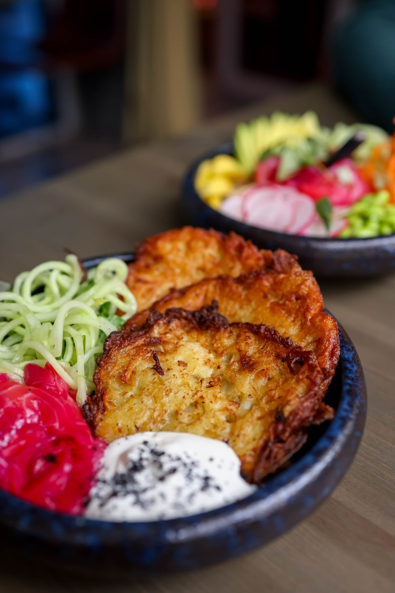
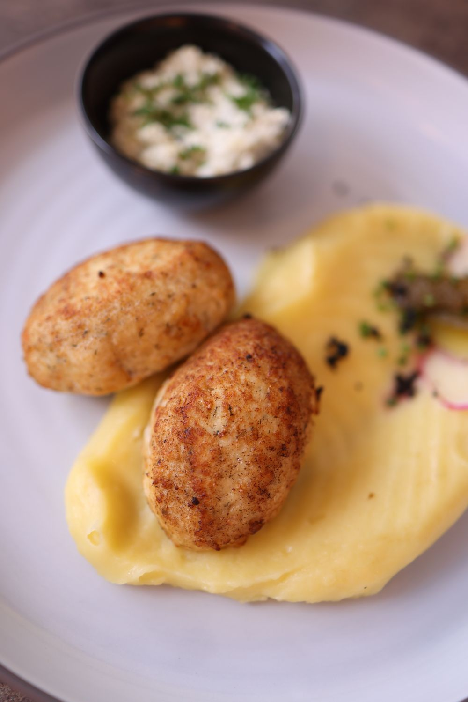
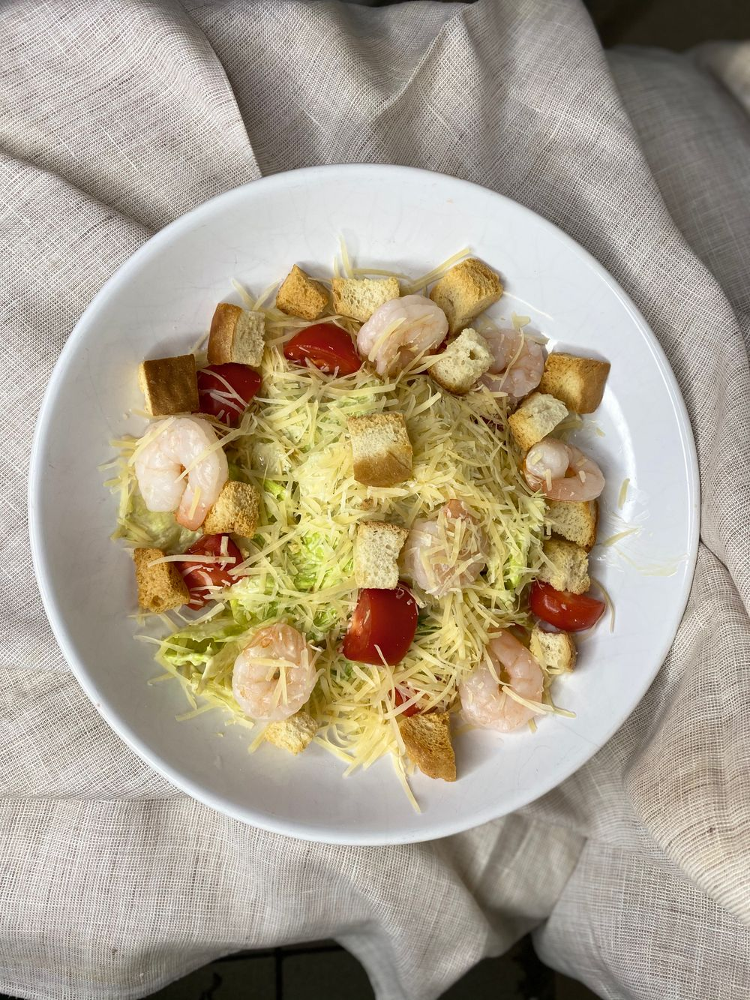
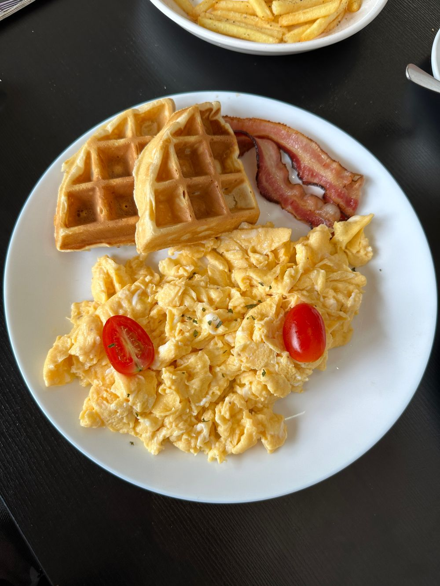

Блюдо не найдено
Возможно, в ссылке ошибка. Выберите что-нибудь вкусное в меню.
Вернуться в меню ↗
Пример подачи · фотография Pexels
Завтраки / 320 г
Шакшука
Яйца, томаты и пряности. С хлебом, чтобы собрать соус до последней капли.
Готовим из знакомых ингредиентов, которые прекрасно дополняют друг друга. Блюдо для приятной паузы в середине дня.
| Состав | Томаты, яйца, сладкий перец, лук, чеснок, паприка, зелень, пшеничный хлеб. |
|---|---|
| Аллергены | Яйца, глютен. |
| Порция | 320 г |
490 ₽
Демонстрационная цена, состав и вес. Условия реального кафе могут отличаться.
← Вернуться в меню
Пример подачи · фотография Pexels
Завтраки / 250 г
Драники со сметаной
Хрустящие снаружи, нежные внутри. Со сметаной и свежей зеленью.
Готовим из знакомых ингредиентов, которые прекрасно дополняют друг друга. Блюдо для приятной паузы в середине дня.
| Состав | Картофель, яйцо, пшеничная мука, лук, сметана, укроп. |
|---|---|
| Аллергены | Яйца, молоко, глютен. |
| Порция | 250 г |
390 ₽
Демонстрационная цена, состав и вес. Условия реального кафе могут отличаться.
← Вернуться в меню
Пример подачи · фотография Pexels
Завтраки / 300 г
Завтрак с лососем
Лосось, нежные яйца, авокадо и свежие овощи для неспешного утра.
Готовим из знакомых ингредиентов, которые прекрасно дополняют друг друга. Блюдо для приятной паузы в середине дня.
| Состав | Лосось слабосолёный, яйца, авокадо, томаты черри, салат, хлеб. |
|---|---|
| Аллергены | Рыба, яйца, глютен. |
| Порция | 300 г |
650 ₽
Демонстрационная цена, состав и вес. Условия реального кафе могут отличаться.
← Вернуться в меню
Пример подачи · фотография Pexels
Горячие блюда / 350 г
Митболы с картофельным пюре
Сочные мясные шарики на воздушном пюре. Просто, сытно, по-домашнему.
Готовим из знакомых ингредиентов, которые прекрасно дополняют друг друга. Блюдо для приятной паузы в середине дня.
| Состав | Говядина, свинина, картофель, молоко, сливочное масло, лук, зелень. |
|---|---|
| Аллергены | Молоко. |
| Порция | 350 г |
590 ₽
Демонстрационная цена, состав и вес. Условия реального кафе могут отличаться.
← Вернуться в меню
Пример подачи · фотография Pexels
Горячие блюда / 300 г
Паста Карбонара
Паста с беконом, пармезаном и шелковистым соусом на желтках.
Готовим из знакомых ингредиентов, которые прекрасно дополняют друг друга. Блюдо для приятной паузы в середине дня.
| Состав | Паста из твёрдых сортов пшеницы, бекон, яичный желток, пармезан, чёрный перец. |
|---|---|
| Аллергены | Глютен, яйца, молоко. |
| Порция | 300 г |
550 ₽
Демонстрационная цена, состав и вес. Условия реального кафе могут отличаться.
← Вернуться в меню
Пример подачи · фотография Pexels
Салаты / 260 г
Цезарь с креветками
Хрустящий романо, креветки и пармезан с нашим прочтением классического соуса.
Готовим из знакомых ингредиентов, которые прекрасно дополняют друг друга. Блюдо для приятной паузы в середине дня.
| Состав | Креветки, салат романо, томаты черри, пармезан, сухарики, соус цезарь. |
|---|---|
| Аллергены | Ракообразные, молоко, яйца, рыба, глютен, горчица. |
| Порция | 260 г |
620 ₽
Демонстрационная цена, состав и вес. Условия реального кафе могут отличаться.
← Вернуться в меню
Пример подачи · фотография Pexels
Салаты / 300 г
Боул с цыплёнком
Тёплый цыплёнок и свежие овощи в одной яркой, сбалансированной тарелке.
Готовим из знакомых ингредиентов, которые прекрасно дополняют друг друга. Блюдо для приятной паузы в середине дня.
| Состав | Филе цыплёнка, салат, огурец, томаты, авокадо, оливковое масло, лимон. |
|---|---|
| Аллергены | Возможны следы горчицы. |
| Порция | 300 г |
540 ₽
Демонстрационная цена, состав и вес. Условия реального кафе могут отличаться.
← Вернуться в меню
Пример подачи · фотография Pexels
Супы / 350 г
Том ям с креветками
Пряный бульон, креветки, грибы и лайм. Маленькое путешествие за обедом.
Готовим из знакомых ингредиентов, которые прекрасно дополняют друг друга. Блюдо для приятной паузы в середине дня.
| Состав | Креветки, шампиньоны, томаты, кокосовое молоко, паста том ям, лайм, кинза, рыбный соус. |
|---|---|
| Аллергены | Ракообразные, рыба. |
| Порция | 350 г |
690 ₽
Демонстрационная цена, состав и вес. Условия реального кафе могут отличаться.
← Вернуться в меню
Пример подачи · фотография Pexels
Супы / 350 г
Борщ с говядиной
Наваристый борщ со свёклой и говядиной, сметаной и ржаным хлебом.
Готовим из знакомых ингредиентов, которые прекрасно дополняют друг друга. Блюдо для приятной паузы в середине дня.
| Состав | Говядина, свёкла, капуста, картофель, морковь, лук, томат, сметана, ржаной хлеб. |
|---|---|
| Аллергены | Молоко, глютен. |
| Порция | 350 г |
450 ₽
Демонстрационная цена, состав и вес. Условия реального кафе могут отличаться.
← Вернуться в меню
Пример подачи · фотография Pexels
Десерты / 150 г
Сырный чизкейк
Сливочная текстура, рассыпчатая основа и то самое настроение «ещё кусочек».
Готовим из знакомых ингредиентов, которые прекрасно дополняют друг друга. Блюдо для приятной паузы в середине дня.
| Состав | Сливочный сыр, сливки, сахар, яйца, пшеничное печенье, сливочное масло, ягоды. |
|---|---|
| Аллергены | Молоко, яйца, глютен. |
| Порция | 150 г |
350 ₽
Демонстрационная цена, состав и вес. Условия реального кафе могут отличаться.
← Вернуться в меню
Пример подачи · фотография Pexels
Десерты / 160 г
Вишнёвый пирог
Тонкое тесто и щедрая вишнёвая начинка с лёгкой кислинкой.
Готовим из знакомых ингредиентов, которые прекрасно дополняют друг друга. Блюдо для приятной паузы в середине дня.
| Состав | Пшеничная мука, сливочное масло, яйца, вишня, сахар, крахмал. |
|---|---|
| Аллергены | Глютен, молоко, яйца. |
| Порция | 160 г |
320 ₽
Демонстрационная цена, состав и вес. Условия реального кафе могут отличаться.
← Вернуться в меню
Пример подачи · фотография Pexels
Десерты / 230 г
Сырники с фундуком
Румяные творожные сырники со сметаной, ягодами и дроблёным фундуком.
Готовим из знакомых ингредиентов, которые прекрасно дополняют друг друга. Блюдо для приятной паузы в середине дня.
| Состав | Творог, яйца, пшеничная мука, сахар, сметана, ягоды, фундук. |
|---|---|
| Аллергены | Молоко, яйца, глютен, орехи. |
| Порция | 230 г |
430 ₽
Демонстрационная цена, состав и вес. Условия реального кафе могут отличаться.
← Вернуться в меню
Пример подачи · фотография Pexels
Завтраки / 200 г
Греческий йогурт с голубикой
Густой натуральный йогурт с голубикой — лёгкое начало вашего дня.
Готовим из знакомых ингредиентов, которые прекрасно дополняют друг друга. Блюдо для приятной паузы в середине дня.
| Состав | Греческий йогурт, голубика, мёд. |
|---|---|
| Аллергены | Молоко. |
| Порция | 200 г |
360 ₽
Демонстрационная цена, состав и вес. Условия реального кафе могут отличаться.
← Вернуться в меню
Пример подачи · фотография Pexels
Каши / 280 г
Овсяная каша с ягодами
Нежная молочная овсянка со свежими ягодами. Для самого уютного утра.
Готовим из знакомых ингредиентов, которые прекрасно дополняют друг друга. Блюдо для приятной паузы в середине дня.
| Состав | Овсяные хлопья, молоко, сливочное масло, малина, сахар. |
|---|---|
| Аллергены | Глютен, молоко. |
| Порция | 280 г |
310 ₽
Демонстрационная цена, состав и вес. Условия реального кафе могут отличаться.
← Вернуться в меню
Пример подачи · фотография Pexels
Сэндвичи и вафли / 290 г
Вафля с беконом и скрэмблом
Золотистая вафля, хрустящий бекон и мягкий скрэмбл. Завтрак с характером.
Готовим из знакомых ингредиентов, которые прекрасно дополняют друг друга. Блюдо для приятной паузы в середине дня.
| Состав | Пшеничная мука, яйца, молоко, сливочное масло, бекон, томаты. |
|---|---|
| Аллергены | Глютен, яйца, молоко. |
| Порция | 290 г |
520 ₽
Демонстрационная цена, состав и вес. Условия реального кафе могут отличаться.
← Вернуться в меню
Пример подачи · фотография Pexels
Напитки / 250 мл
Капучино
Эспрессо и бархатистая молочная пена. Ничего лишнего, всё любимое.
Готовим из знакомых ингредиентов, которые прекрасно дополняют друг друга. Блюдо для приятной паузы в середине дня.
| Состав | Эспрессо, молоко. |
|---|---|
| Аллергены | Молоко. |
| Порция | 250 мл |
240 ₽
Демонстрационная цена, состав и вес. Условия реального кафе могут отличаться.
← Вернуться в меню